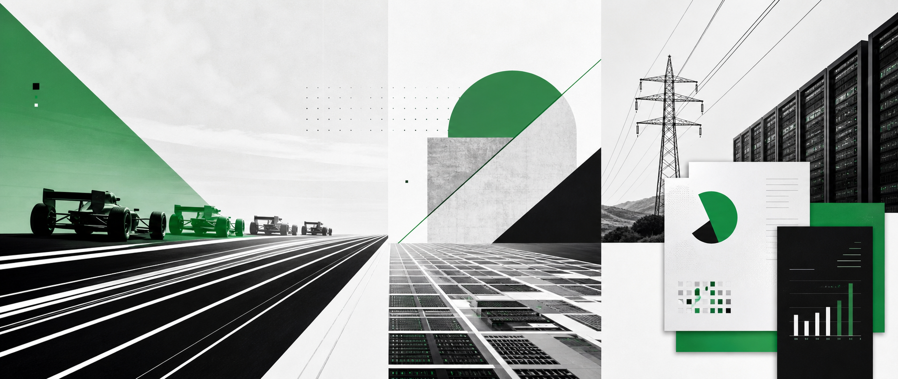
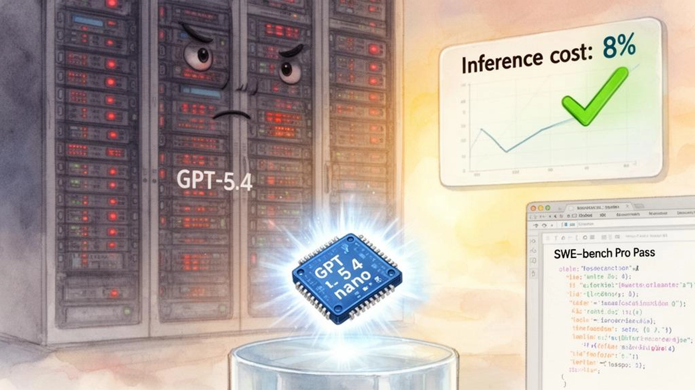
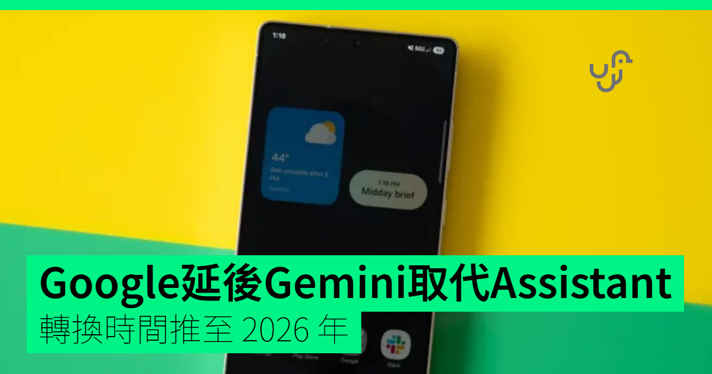
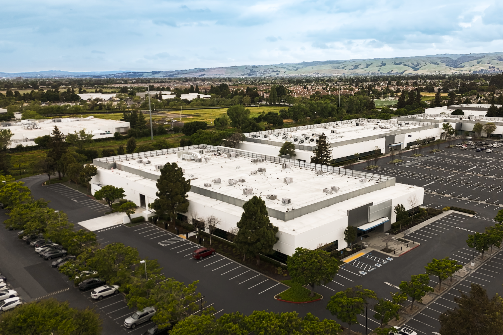
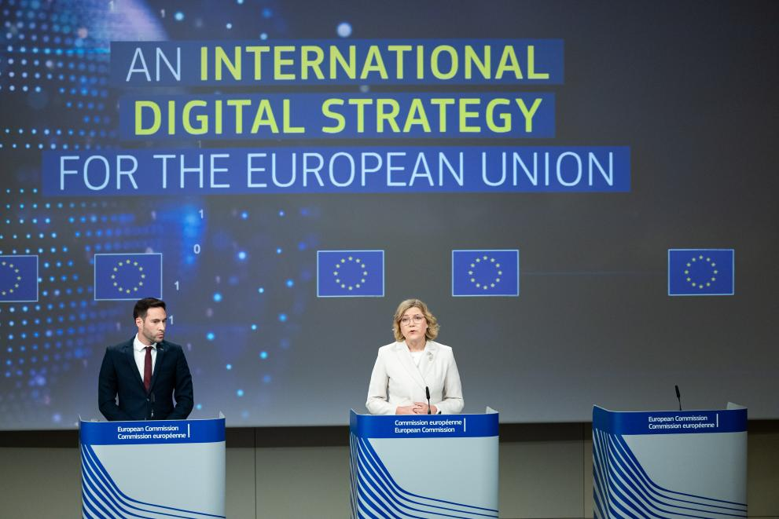
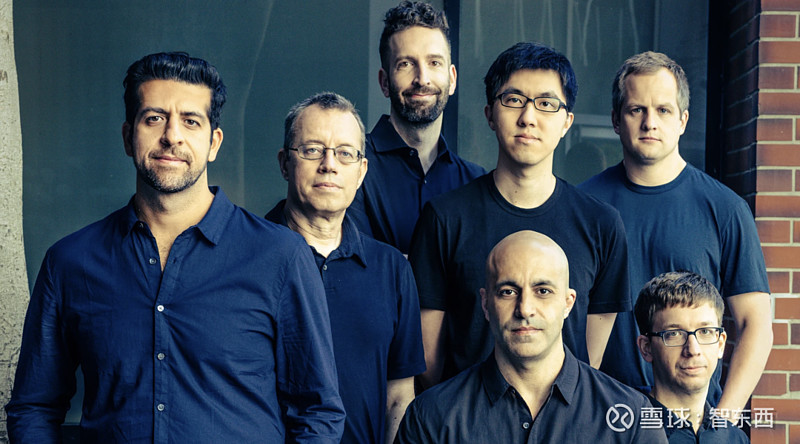
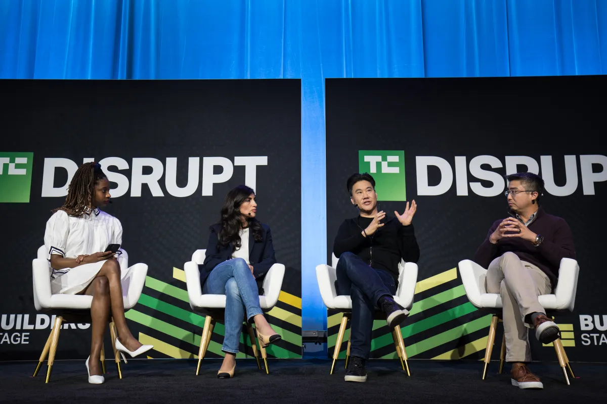
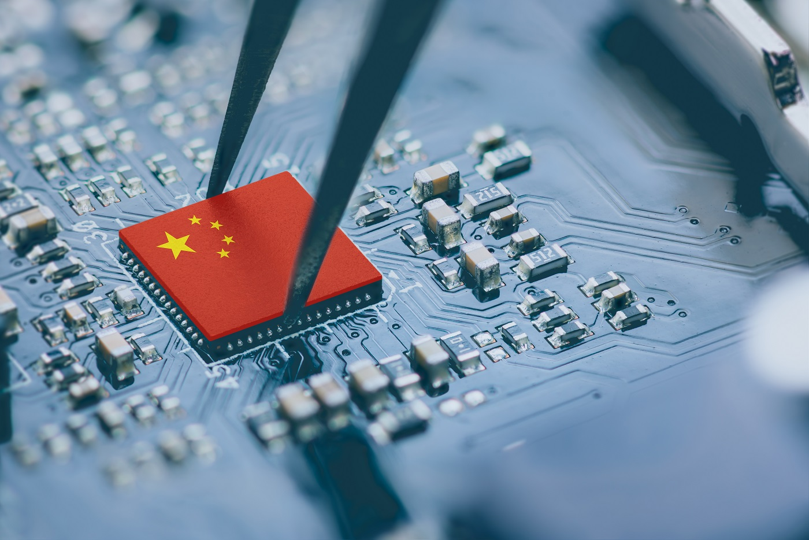
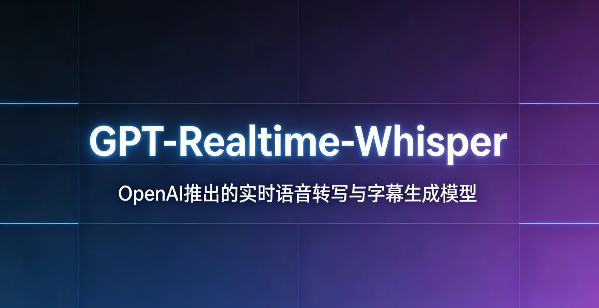

Janet 快车箱
AI Daily Briefing
2026-07-18
VOL 291

读者，早。
对中国创作者和中小团队，今天的信号很实际。便宜模型更多，不等于所有人都该上超大模型；算力越来越贵，也不等于只剩巨头能玩。真正的分界线会变成：你有没有足够清楚的任务、数据和验收标准，让模型分数变成内容、代码、客服、设计或销售里的可复用产能。

Artificial Analysis 7 月 17 日发布评测，称 Kimi K3 在 Intelligence Index 得分 57，达到第三名，表现接近 Anthropic Opus 4.8 和 OpenAI GPT-5.5，但仍落后 Claude Fable 5 与 GPT-5.6 Sol。文章同时强调 Moonshot 计划释放 2.8 万亿参数模型权重。

Artificial Analysis 7 月 17 日统计称，过去 8 天内出现 4 个前沿模型发布，已有 6 家实验室的模型在其 Intelligence Index 上超过 50 分：Anthropic、OpenAI、Moonshot AI、SpaceXAI、Z AI 和 Meta 都进入这一档位。

OpenAI 在 7 月 17 日文章中把 GPT-5.6 分为 Sol、Terra、Luna 三档，并称 GPT-5.6 Sol 在 Artificial Analysis Coding Agent Index 的 max reasoning 设置下达到新高，同时比另一个领先模型少用 54% 输出 token。OpenAI 借此强调成本应按成功任务而非 token 单价衡量。

Investopedia 7 月 17 日盘前报道提到，Alphabet 股价承压，市场继续消化 Gemini 3.5 Pro 推迟发布的消息。报道将它与 AI 相关科技股波动放在一起，说明投资者正在重新衡量大厂 AI 投入的回报速度。

Agility Robotics 7 月 17 日宣布在加州 Fremont 开设新设施，用于推进 Digit 人形机器人的 physical AI 开发。公司称该场地将支持工程团队训练、测试并推进机器人学习新技能，面向商业部署扩展能力。
TechCrunch 7 月 17 日报道，三年历史的 Valar Atomics 正洽谈新融资，目标估值约 60 亿美元，Sequoia 预计领投。该公司开发小型模块化核反应堆，面向更快、更低成本部署的电力基础设施。
SFGate 7 月 17 日报道，Anthropic、Google DeepMind 和 OpenAI 等公司员工向支持 AI 安全监管的 Public First 政治组织捐款超过 300 万美元。其中 Anthropic CEO Dario Amodei 单人捐出 100 万美元，另有多名 Anthropic 员工合计捐出超过 200 万美元。

欧盟委员会公告称，已初步认定 Instagram 和 Facebook 的 addictive design 可能违反 DSA，调查聚焦无限滚动、自动播放、推送通知和高度个性化推荐系统，并指出 Meta 对未成年人和脆弱成年人风险评估不足。该公告在 7 月 17 日继续被多家科技媒体纳入 AI 与平台治理讨论。

Databricks 新一轮融资将估值推至 1880 亿美元。WSJ 报道称，公司 AI 产品收入 run rate 到 6 月已达 17 亿美元，总公司收入 run rate 在 2 月达到 54 亿美元；Unity AI Gateway 和 Genie One 被视为其继续吃企业 AI 预算的关键产品。

TechCrunch 7 月 17 日在 Disrupt 2026 预告中提到，AI startup 正吸走大量 seed funding，也让 pre-seed 创始人被投资人用 seed 阶段的标准审视。文章介绍 Axiom Partners 这个 5200 万美元早期基金，以及围绕无产品阶段融资叙事的讨论。

MarketWatch 7 月 17 日报道称，Moonshot Kimi K3 发布引发市场担忧出现第二次 DeepSeek 冲击，半导体与 AI 相关股票承压，部分中国 AI 公司、SoftBank 和日本芯片公司也出现明显下跌。Investopedia 同日也提到 AI 科技股拖累美股期货。

OpenAI 的 GPT-Live 已开始向 ChatGPT 用户推出，主打 full-duplex 语音交互，可边听边说，并在需要搜索、深度推理或复杂任务时调用后台前沿模型。虽然原始发布在 7 月 8 日，OpenAI 7 月 17 日的企业 ROI 文章让它更像一个前台入口：语音负责交互，后台模型负责完成复杂工作。